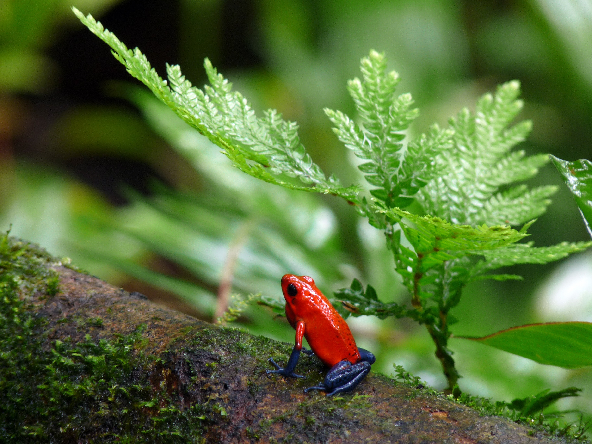
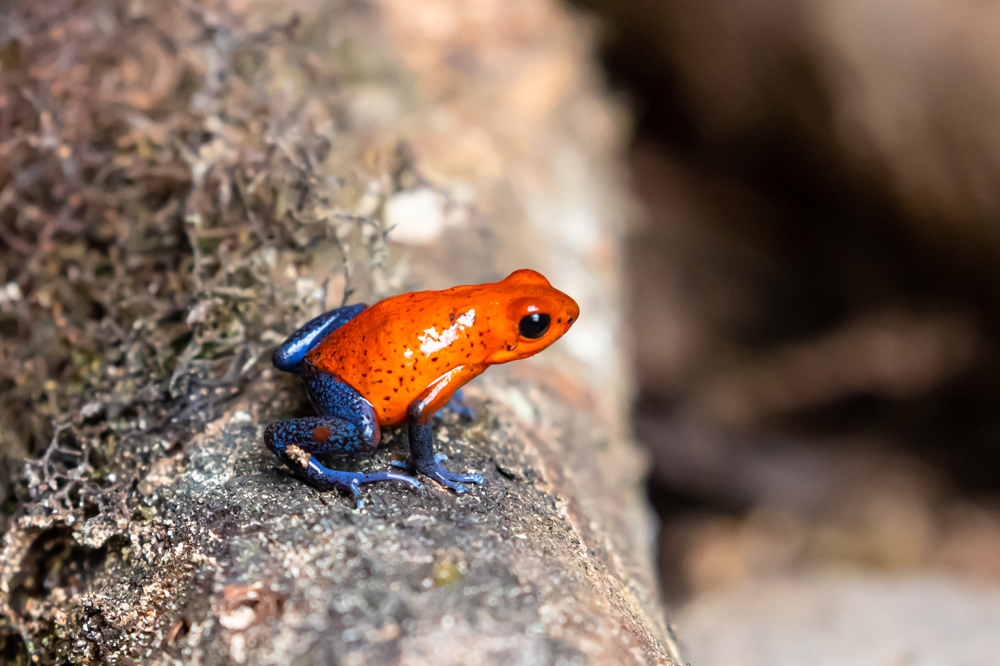
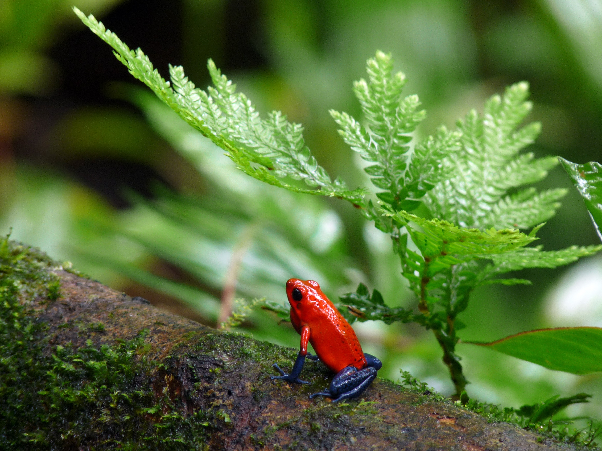
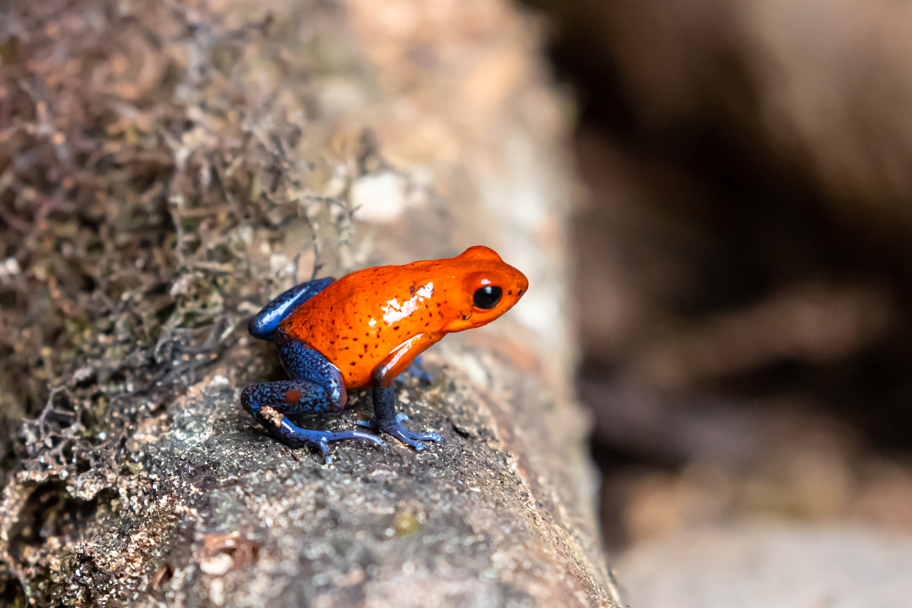
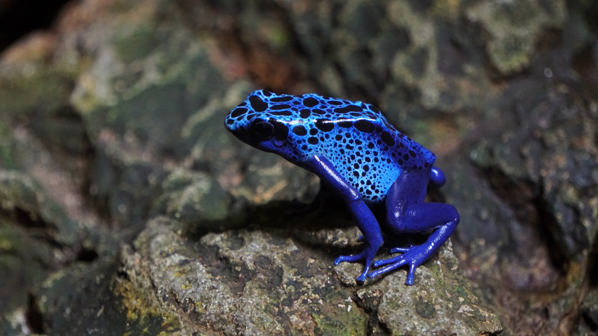
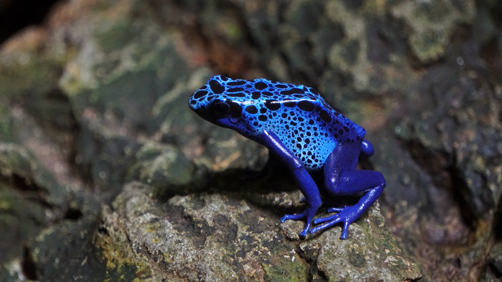

Broasca sageata-veninoasa
Aceasta broasca exclusiv terestra traieste in sudul Americii Centrale si in nord-vestul Americii de Sud, mai
ales in Panama, Costa Rica si Columbia. Este un animal care isi foloseste veninul pentru a se apara. Poate
ajunge la lungimea corpului de 2,5-6 cm si are un colorit stralucitor care atentioneaza pradatorii ca este
toxica si astfel ei o evita, iar ea topaie in voie pe solul din padure.
Are corpul destul de mic, capul ascutit si un colorit viu si stralucitor. Culorile strălucitoare le indică
prădătorilor că este toxică şi-i permit broaștei să țopăie nederanjată pe
solul pădurii. Ritualul nupțial este cu totul ieșit din comun. Femelele preiau conducerea şi-i conving pe
masculi să se împerecheze bătându-i pe spate cu membrele posterioare.
Femela depune grupuri de 5-13 ouă în litiera de frunze, dar masculul este cel care păzește ouăle, având
uneori mai multe grămăjoare de supravegheat. Când ies mormolocii, îi duce în spate până la băltoacele
acumulate în scorburi.
Broasca este mică şi are cap ascuțit. Specia este viu colorată în negru cu pete verzi, uneori cu un luciu
auriu. Culoarea servește drept avertisment pentru prădători.
Obisnuieste sa manance furnici otravitoare si apoi sa transforme otrava acestora intr-o substanta toxica pe
care o poate elimina prin piele. De asemenea, consuma tantari si diferite antropode mici. Otrava acestei
broaste nu este chiar atat de puternica sa poata omora un om, insa de multe ori poate provoca reactii
iritante mari.


 



 
